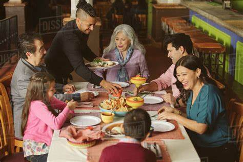

Welcome to The Dining Den, a culinary haven dedicated to providing an exceptional dining experience that lingers in your memory. Nestled in the heart of the city, our restaurant has been serving delectable dishes and warm hospitality to our esteemed guests for over a decade.
At The Dining Den, we believe that dining is not just about the food; it's about the entire experience. From the moment you step through our doors, you'll be greeted by a team of passionate individuals who are committed to making your visit truly extraordinary. Our friendly staff is always on hand to offer recommendations, cater to your dietary preferences, and ensure that your time with us is nothing short of perfect.
Our menu is a carefully curated masterpiece, crafted to showcase the finest ingredients and flavors from around the world. Our team of talented chefs combines culinary expertise with a touch of creativity to present you with dishes that are as visually stunning as they are mouthwatering. From the first bite to the last, each plate tells a story of passion, dedication, and a commitment to culinary excellence.
We take great pride in sourcing the freshest local produce and ingredients, supporting local farmers and producers whenever possible. By doing so, we not only ensure the highest quality in our dishes but also contribute to the sustainability of our community. It is our belief that great food should not only be delicious but also ethically sourced and environmentally responsible.
Step inside our elegant and inviting space, carefully designed to provide an ambiance that complements the culinary journey you are about to embark upon. Whether you're seeking an intimate dinner for two, a lively gathering with friends, or a private event, we have the perfect setting to accommodate your needs. Our restaurant features stylish and comfortable seating areas, both indoors and on our charming patio, allowing you to choose the atmosphere that suits your preferences.
To enhance your dining experience further, we offer an extensive beverage selection, featuring a range of hand-picked wines, artisanal cocktails, and carefully crafted mocktails. Our knowledgeable sommeliers are ready to guide you through the options, ensuring that your chosen beverage perfectly complements the flavors of your meal.
At The Dining Den, we believe that exceptional food, impeccable service, and a welcoming atmosphere are the key ingredients to a memorable dining experience. We strive to create an environment where you can relax, connect with your loved ones, and savor every moment. Join us and let us be your culinary sanctuary, where each visit is an exploration of flavors, textures, and unforgettable moments.